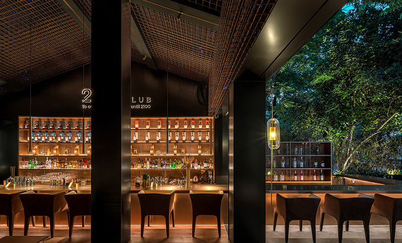

Gatsby Night
Gatsby Night — наш самый атмосферный вечер в году, вдохновлённый эпохой джаза и блеском великосветских балов. Один раз в месяц зал Nique превращается в салон 20‑х годов: мягкий свет ламп в золотых абажурах, живой саксофон и сет шефа, созданный специально для этого вечера. Гости получают именные приглашения, а dress code предполагает лёгкие намёки на стиль ар-деко — бархат, жемчуг и лаконичные аксессуары.
Меню вечера
Гастрономическая программа состоит из шести подач. Шеф Арун Суван сочетает тайские техники с европейскими ингредиентами: тартар из морского гребешка с острым сорбетом из личи, суп Том Кха в легком муссе и запечённый ананас с ванильным рисом жасмин. Каждый курс сопровождается коктейлем от нашего бар-менеджера — от «Bangkok Spritz» с юзу до дымного «Golden Gatsby» на выдержанном виски.
Центр вечера — интерактивная станция, где гости наблюдают за приготовлением блюд на открытом огне. Шеф рассказывает истории, связанные с рецептами, делится воспоминаниями о поездках по Таиланду и отвечает на вопросы. В паузах выступает джаз-трио, исполняя импровизации на темы Гершвина.
Чтобы попасть на Gatsby Night, нужно заранее оставить заявку на сайте или написать нашему менеджеру в Telegram. Количество мест ограничено тридцатью гостями, поэтому столы закрываются быстро. Мы рады видеть как постоянных гостей, так и тех, кто только знакомится с кухней Nique. Погрузитесь в атмосферу золотых двадцатых и позвольте себе вечер, где вкус и музыка тесно переплетаются.